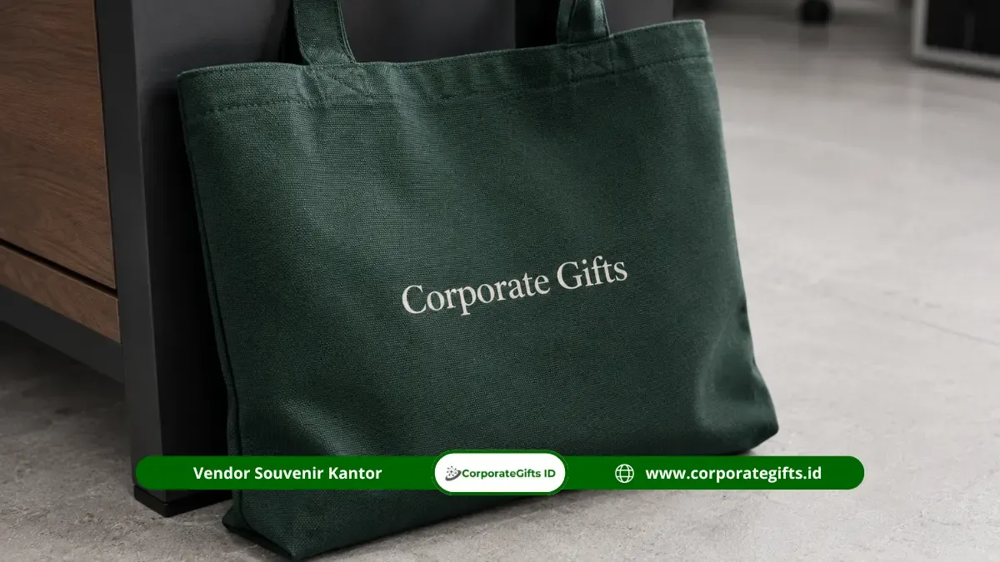

Corporate Gifts ID - Souvenir meeting fungsional adalah perlengkapan rapat esensial, seperti blocknote, pulpen seminar, lanyard ID card, dan tote bag custom logo, yang dibagikan kepada peserta agar jalannya rapat lebih fokus, teratur, dan terorganisir. Melalui meeting kit siap pakai, peserta tidak terdistraksi mencari alat tulis sendiri sehingga agenda rapat harian maupun konferensi besar dapat berlangsung produktif dan terstruktur.
Poin Kunci Souvenir Meeting Fungsional:
- Dukungan Teknis Rapat: Menyediakan fasilitas kerja langsung di atas meja peserta guna memangkas hambatan teknis saat notulensi berlangsung.
- Identifikasi Cepat: Tali lanyard dan tanda pengenal resmi mempermudah interaksi komunikasi antarpeserta lintas departemen.
- Kombinasi Esensial: Paket paling populer memadukan blocknote ringkas, pen gel metal, lanyard presisi, dan tas pembawa dokumen ramah lingkungan.
- Konsistensi Kualitas Cetak: Pemilihan teknik cetak yang tepat menjaga ketajaman logo korporat agar tidak mudah pudar atau luntur.
- Efisiensi Anggaran Skala Besar: Pengadaan paket meeting secara terpusat menghasilkan penghematan biaya produksi per unit yang optimal.
Dalam iklim operasional korporat yang serba cepat, koordinasi tatap muka membutuhkan efisiensi waktu yang ketat. Ketiadaan fasilitas tulis dasar di ruang sidang dapat memicu distraksi yang merusak konsentrasi audiens sejak menit awal acara dimulai.
Peran Souvenir Meeting Fungsional dalam Memperlancar Rapat
Ketersediaan alat tulis resmi di meja rapat menghindarkan peserta dari kerepotan mencari perlengkapan pribadi. Ketika setiap staf atau tamu undangan disambut dengan perlengkapan yang tertata rapi, atmosfer pertemuan seketika berubah menjadi lebih khidmat dan berorientasi hasil.
Di samping aspek kepraktisan, membagikan souvenir kantor fungsional memberikan impresi kesiapan panitia penyelenggara. Audiens akan menyadari bahwa manajemen memfasilitasi kebutuhan mereka secara cermat demi kelancaran diskusi bersama.
Mengapa Meeting Kit Penting untuk Rapat Lintas Departemen?
Agenda rapat yang mempertemukan divisi berbeda - seperti operasional pabrik, divisi pemasaran, tim legal, hingga konsultan eksternal - memerlukan media identifikasi visual yang cepat dan jelas. Penyelenggara tidak dapat berasumsi seluruh peserta saling mengenal dengan baik.
Penggunaan tali lanyard berwarna identik dengan selipan kartu nama memudahkan koordinasi dan penunjukan juru bicara dalam sesi tanya jawab. Keseragaman perlengkapan ini sekaligus menghapus sekat hierarki dan memperkuat rasa kebersamaan dalam satu visi korporasi.
Katalog Souvenir Meeting Fungsional Favorit
Terdapat beberapa instrumen dasar yang menjadi standar baku pengadaan rapat korporat modern di Corporate Gifts:
1. Blocknote Custom dan Pulpen Perusahaan
Pasangan blocknote seminar kit spiral atau lem panas dengan pulpen promosi berlogo adalah kombinasi wajib di setiap meja sidang. Peserta dapat langsung mencatat poin strategis tanpa membuka laptop yang berisiko memecah konsentrasi.
2. Lanyard dan ID Card Holder Eksklusif
Tali gantungan kartu nama berbahan tisue lembut atau polyester berteknologi sublimasi full color memastikan tanda pengenal terlihat rapi dan tidak mengiritasi kulit leher saat dikenakan sepanjang hari.
3. Tas Spunbond atau Tote Bag Custom Canvas
Wadah penampung berupa tas jinjing fleksibel sangat krusial untuk menaruh bundel materi paparan, lembar evaluasi, dan modul panduan kerja agar tidak tercecer saat peserta meninggalkan ruang rapat.

Kombinasi pulpen metal, notebook, dan lanyard custom logo berkualitas untuk kebutuhan rapat kerja instansi.
Bagaimana Memilih Souvenir Sesuai Agenda Rapat?
Kebutuhan perlengkapan rapat harus diselaraskan secara proporsional dengan skala durasi dan audiens acara. Pertemuan evaluasi mingguan berdurasi satu jam tentu membutuhkan alokasi sumber daya yang berbeda dibanding konsinyasi strategi tiga hari di hotel luar kota.
Tabel Panduan Kombinasi Souvenir Sesuai Jenis Rapat
Berikut matriks rekomendasi racikan paket suvenir meeting berdasarkan karakter agenda kerja:
| Kategori Agenda Rapat | Kombinasi Souvenir yang Disarankan | Alasan & Nilai Manfaat Praktis |
|---|---|---|
| Koordinasi Internal Harian / Mingguan | Blocknote A5 lem lepas & pulpen gel promosi | Praktis, hemat anggaran, dan cukup untuk notulensi poin inti rapat |
| Rapat Lintas Divisi & Vendor Eksternal | Blocknote spiral, pulpen metal, dan tali lanyard ID card | Mempermudah identifikasi mitra dan menjaga kerapian koordinasi kerja |
| Konsinyasi Multi-Hari / Konferensi RUPS | Notebook hardcover, pen premium, lanyard, tote bag, & tumbler | Membawa berkas tebal dengan aman serta mendukung hidrasi berkelanjutan |
Kustomisasi Logo Perusahaan yang Rapi dan Tahan Lama
Penerapan grafis identitas korporat pada cenderamata rapat wajib disesuaikan dengan jenis bahan dasar. Cetak offset atau digital printing sangat ideal untuk lembaran kertas blocknote, sementara teknik pad printing dan grafir laser memberikan daya rekat sempurna pada tabung pulpen plastik maupun metal.
Di Corporate Gifts, sistem kendali mutu (Quality Control) dilakukan bertingkat mulai dari proofing tata letak mockup digital, evaluasi sampel fisik pertama, hingga inspeksi acak saat perakitan massal untuk memastikan ketajaman warna sesuai panduan brand perusahaan.
Efisiensi Anggaran melalui Pemesanan Partai Besar
Memesan paket souvenir rapat dalam volume besar (bulk order) merupakan strategi cerdas dalam menekan biaya operasional pengadaan tahunan. Dibandingkan melakukan pembelian dadakan setiap kali ada rapat divisi, pengadaan terpusat memungkinkan tim purchasing mendapatkan potongan harga skala grosir.
Stok perlengkapan yang tersimpan rapi di gudang kantor menjamin panitia selalu siap menyelenggarakan rapat mendadak tanpa khawatir terkendala ketiadaan meeting kit.
Memastikan Souvenir Tetap Relevan Digunakan Pasca Rapat
Nilai tambah tertinggi dari suvenir rapat fungsional terletak pada masa pakainya setelah acara berakhir. Blocknote berdesain elegan dan tote bag berbahan kokoh akan terus dibawa karyawan ke meja kantor atau kegiatan harian mereka.
Hindari penempatan logo yang terlalu mendominasi atau mencantumkan tanggal acara secara mencolok. Desain visual yang subtil dan profesional membuat penerima merasa percaya diri menggunakan barang tersebut dalam jangka panjang, sehingga menghasilkan paparan citra positif institusi yang berkelanjutan.
Kesimpulan
Souvenir meeting fungsional merupakan investasi cerdas yang memadukan kelancaran teknis operasional dengan media penguatan reputasi korporat. Dengan komposisi perlengkapan yang tepat dan kualitas material yang teruji, setiap rapat kerja kantor Anda akan berlangsung dengan fokus tinggi, tertib, dan meninggalkan kesan mendalam.
Konsultasikan kebutuhan paket rapat instansi Anda melalui tim spesialis Corporate Gifts untuk memperoleh penawaran harga bersaing dan garansi pengerjaan tepat waktu.
FAQ Seputar Souvenir Meeting Fungsional

Ditulis oleh: Arinda Zakia
Senior Corporate Gifting SpecialistSpesialis kurasi paket seminar kit, perlengkapan meeting fungsional kantor, audit kelayakan cetak logo, dan manajemen logistik B2B di CorporateGifts.ID.
Lihat Profil Lengkap & Panduan Lainnya